In this blog, I will show how to build a responsive navigation bar from the very beginning by using flexbox and Javascript. I suppose that you have the understanding of HTML, CSS, and Javascript, especially the basic HTML tags and how to link the CSS and Javascript files to HTML files.
It is important to know how to create a responsive navigation bar correctly because most of the websites have a navigation bar on the top of the page. These days, a responsive design is getting more important because of the spread of mobile phones.
We will start with the mobile first approach for creating the navigation bar. That means we will build the navigation bar for mobile devices and then for the desktop using media queries.
Here’s the basic HTML for layout:
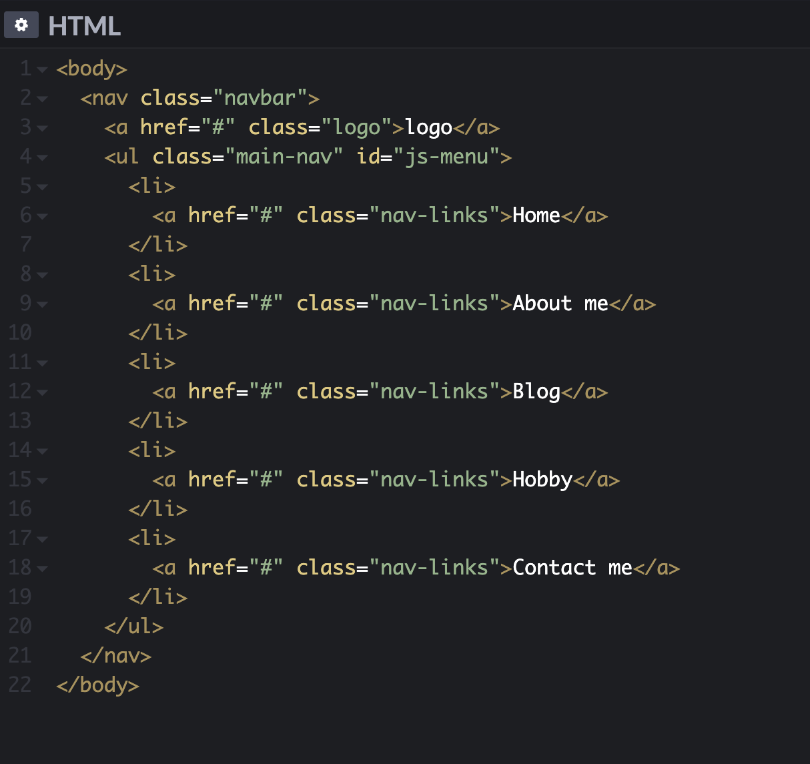You can use any names for classes and Ids.
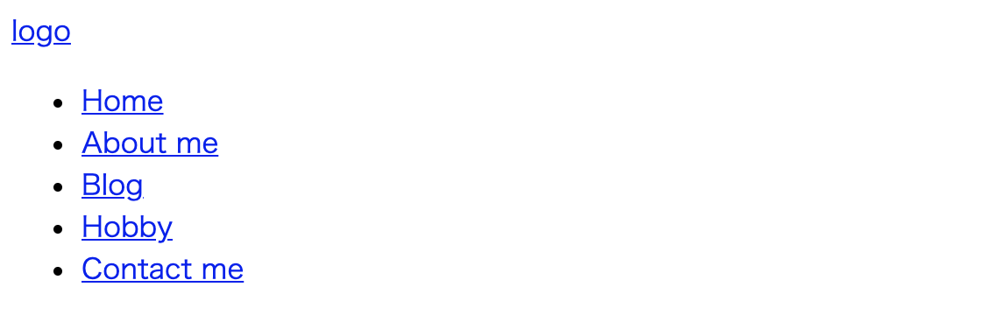This is what we got after writing the above code, this isn’t much, but we will make it better by styling it using CSS.
Let's add some basic styling to make it look nice:
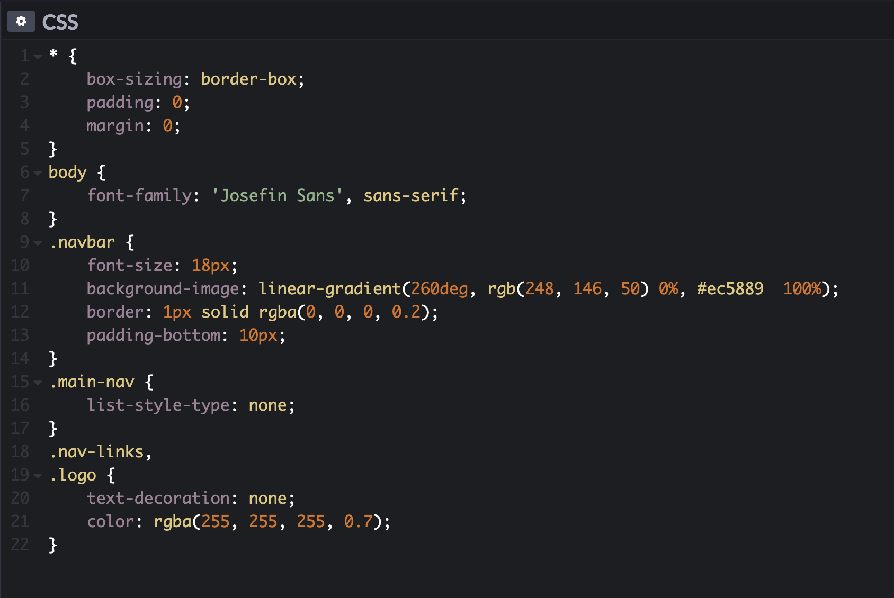This looks much better, I have stripped off any default browser specific padding and margin of every element using the universal selector (*), and set the box-sizing to border-box to make it easy to resize elements.
I have used ‘Josefin Sans’ font for the navigation bar and a linear-gradient for the background. You can choose your own fonts, colors, and background.
Now add some padding and margin to make it look better.
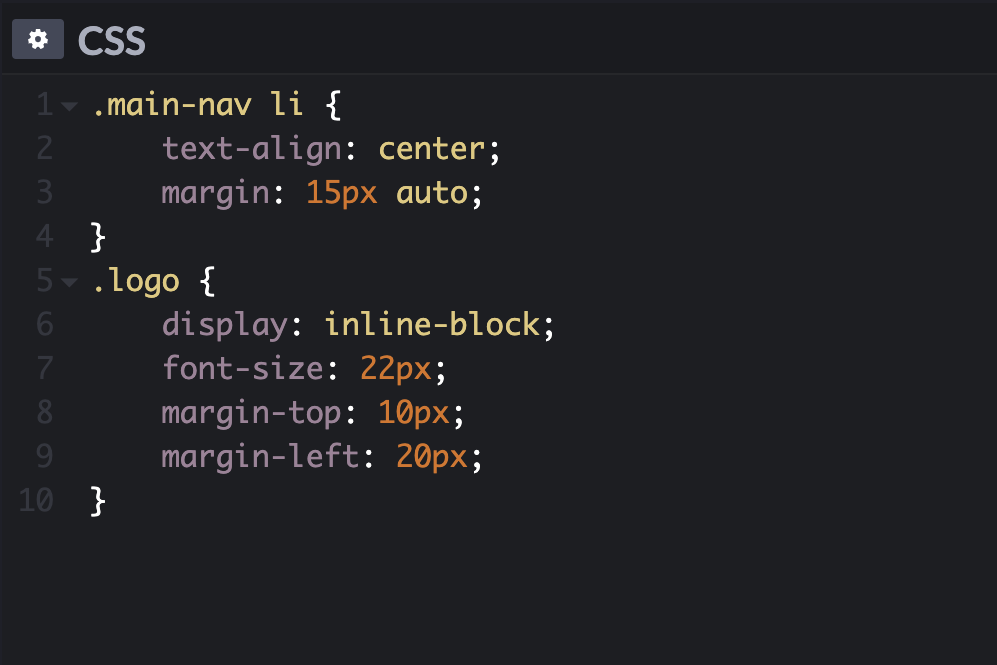 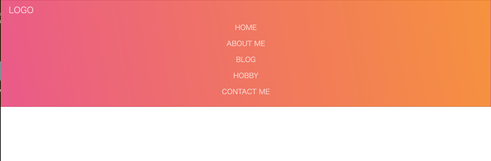It’s starting to look good. Now let’s add a little toggle button at the top right corner. For this, I am going to use Font Awesome icons.
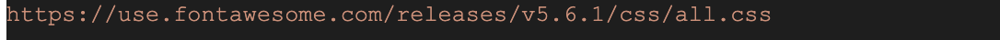You need to have the Font Awesome icons link to your HTML head and you can use a icon code
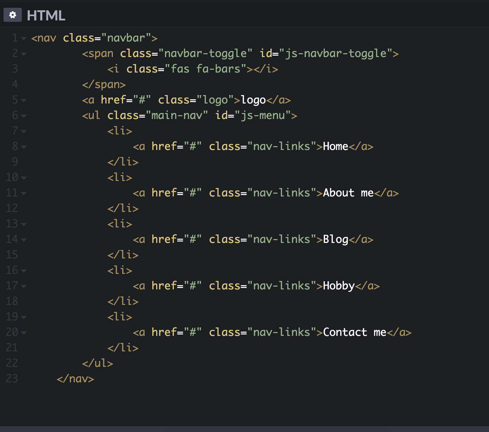 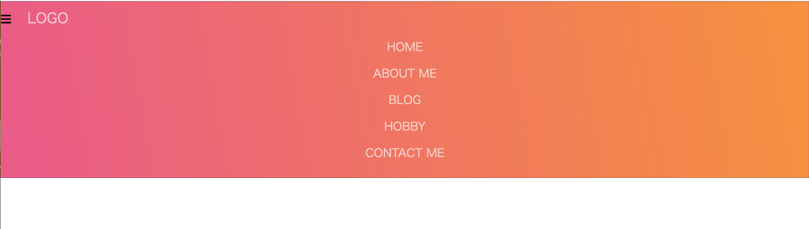This is what it looks like. Notice the little hamburger icon in the top left corner, this is looking weird. So let’s reposition and style it.
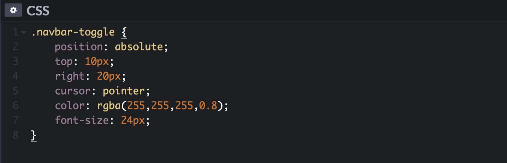 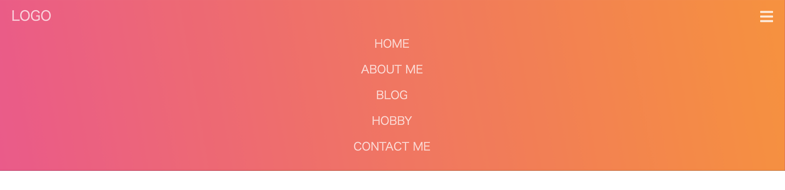The navbar for mobile devices is almost complete now. Let’s add a little bit of JavaScript to enable toggle menu.
I have hidden the menu so that it’s not visible by default.
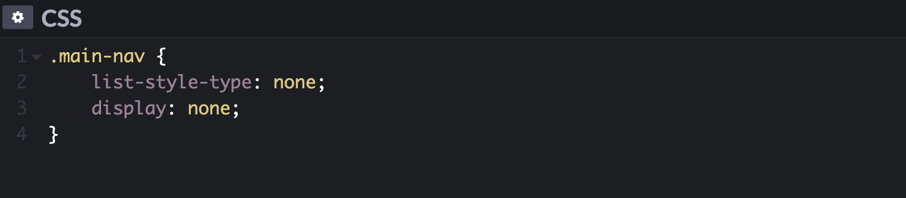 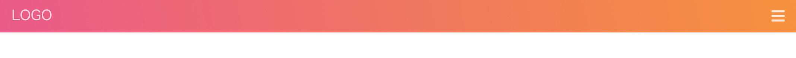Now let’s add some JavaScript code to make it visible when someone clicks on the hamburger icon.
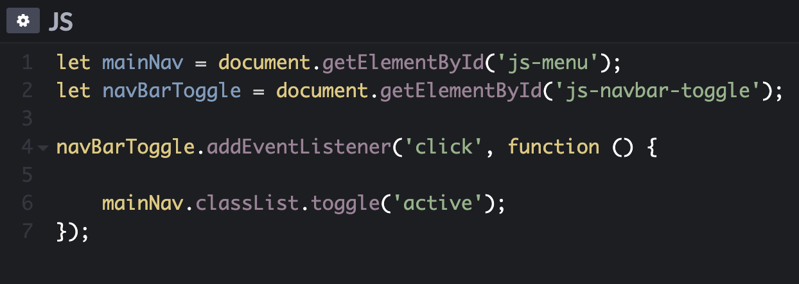This code toggles the active class on the menu list. So add following code in the CSS file.
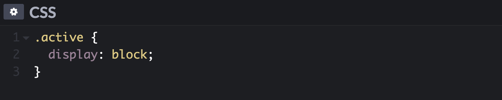Nice and easy, with that our mobile part is over, now let’s move to the desktop part.
for desktop, all we have to do is to change flex-direction property to row and give a .navbar class a display property of flex.
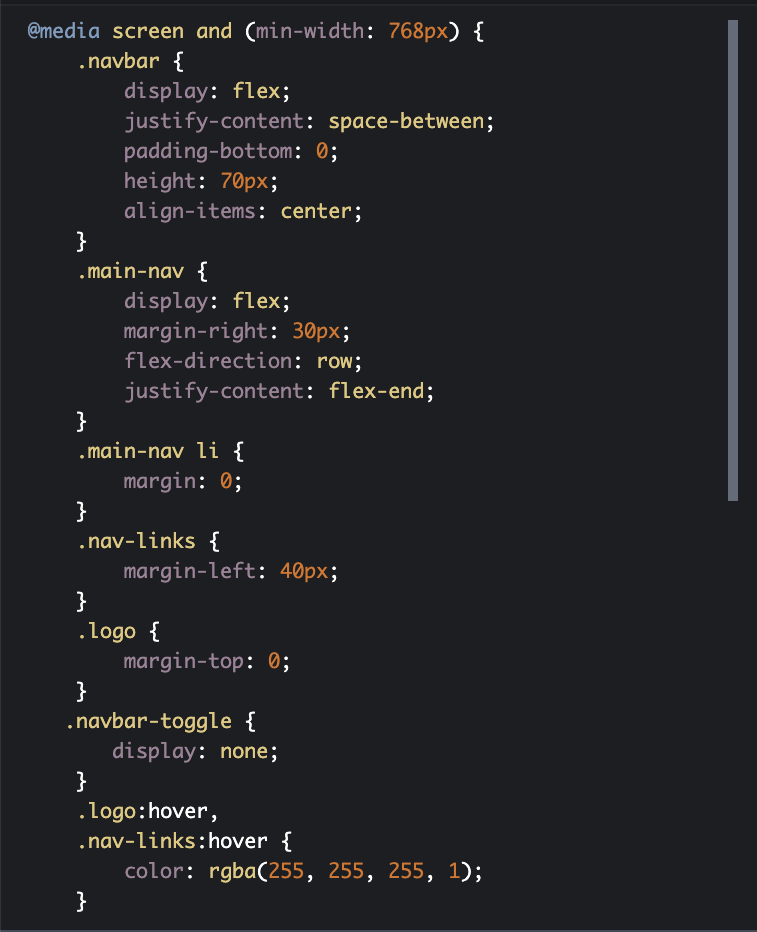 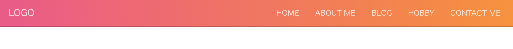